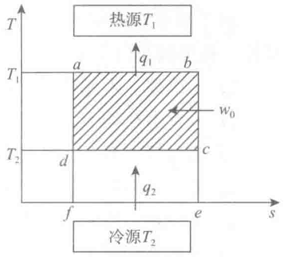
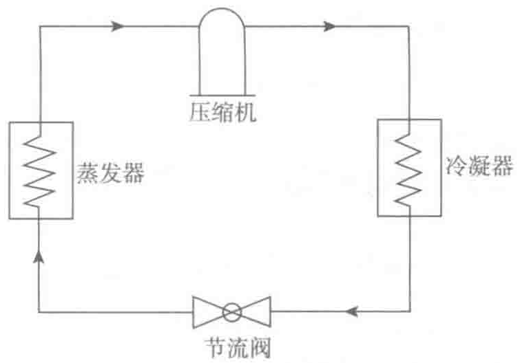

蒸发吸收的汽化潜热）转移到高温热源（冷凝器中的制冷剂凝结时散发出的热量），即制冷循环实际上起的是能量泵的作用。

常见的理论制冷循环为逆卡诺循环，即由两个绝热过程（一种理想状态，物质之间没有热量交换）和两个等温过程（物质温度始终保持不变）组合的一个循环过程，如图4-5所示。
图中纵坐标为热力学温度，横坐标为熵（表示物质能量的一种参数），ω0为压缩机输入的功。物质沿箭头方向，从低温冷源T2吸收热量q2，向高温热源T1放出q1热量，完成一次制冷循环。
在此循环里，压缩机所做的功，即是完成热量转移所需要消耗的能量，所完成转移的能量与它的比值即制冷量与压缩机消耗功的比值称为制冷系数，也叫性能系数：
式中：ε——制冷系数；
ω0——压缩机消耗功；
q2——制冷量。
制冷系数越高，说明制冷循环的效率越高，理论制冷系数的范围为2.5～6或者更高。比如空调的制冷系数可为4，相当于制冷量是压缩机消耗功率的4倍。
4.1.4 制冷循环过程
空调采用的制冷形式有很多种，最常见的为相变式制冷，即利用液体相变时吸收和放出热量的特性来达到热量转移的目的，如：蒸气压缩式、蒸气喷射式、吸收式、吸附式。其中又以蒸气压缩式最为广泛。
蒸气压缩是通过一个循环过程来制冷的。制冷剂（详见4.1.5节）是空调制冷系统中实现制冷循环的工作介质，也就是蒸气压缩中的“蒸气”，一种随着压力改变既容易汽化也容易液化的物质。利用这个特点，先将制冷剂气体利用压缩机做功压缩成高温高压气体，送到冷凝器中，在高压下冷却，气体会在较高的温度下散热而冷凝成液体，高压的制冷剂液体通过一个节流装置，使压力迅速下降后到达蒸发器内，在较低的压力温度下沸腾。

这样制冷剂液体能在较低的温度下吸收汽化潜热蒸发制冷了，蒸发后的低温、低压气体被压缩机吸入后进入下一个循环过程。这就是蒸发压缩式制冷循环的主要过程，即压缩机→冷凝器→节流阀→蒸发器→压缩机，如图4-6所示。